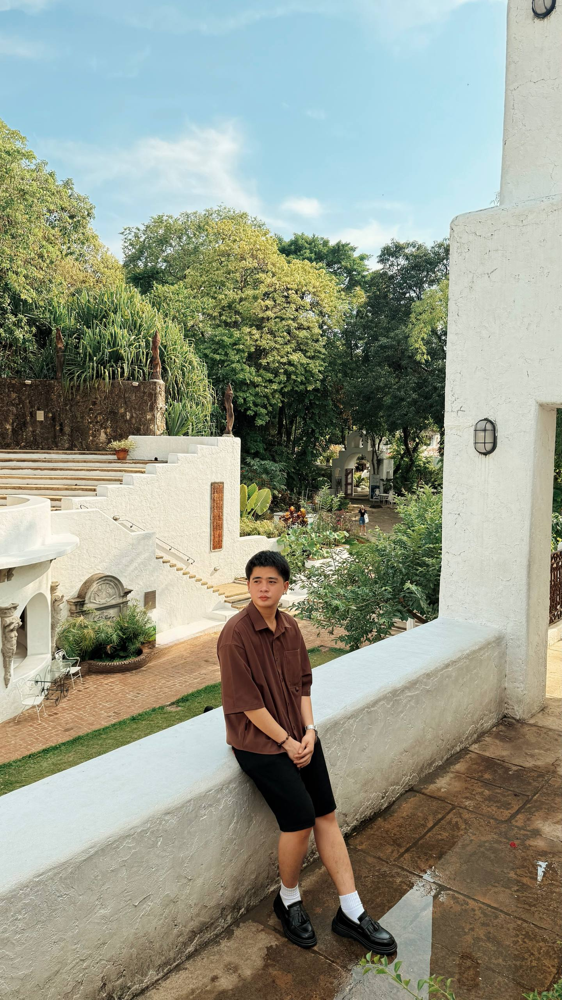
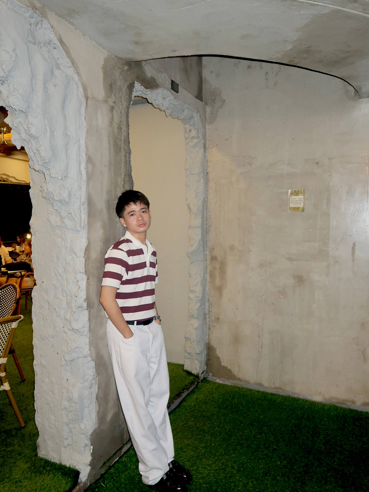

My Background
I’m Cristian Angelo M. Sitjar, a Bachelor of Science in Computer Engineering graduate from Cavite State University – CCAT Campus. After graduating, I joined JRA Technologies Inc. as a Junior Software Engineer, starting with an intensive Erlang bootcamp before joining production projects.
In my two years in software development, I worked on backend CRUD features, system debugging, data processing logic, state machines, and production issue resolution. I also collaborated across teams, joined daily stand-ups, and helped guide incoming trainees during bootcamps.
I’m expanding beyond Erlang by building projects with n8n, AI APIs (OpenAI/Gemini), NestJS, REST APIs, Flutter, Firestore, MySQL, and Git.


Interests & Hobbies
When I'm not writing code or analyzing backend logic, I spend my time playing strategic games, keeping active, and enjoying quiet moments.